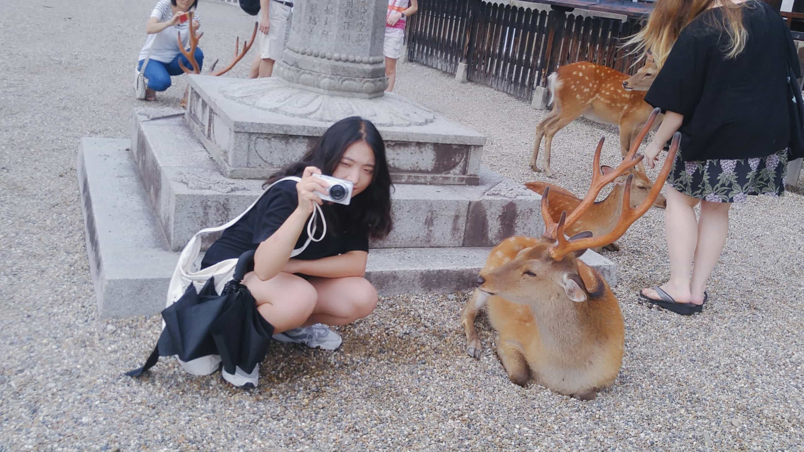
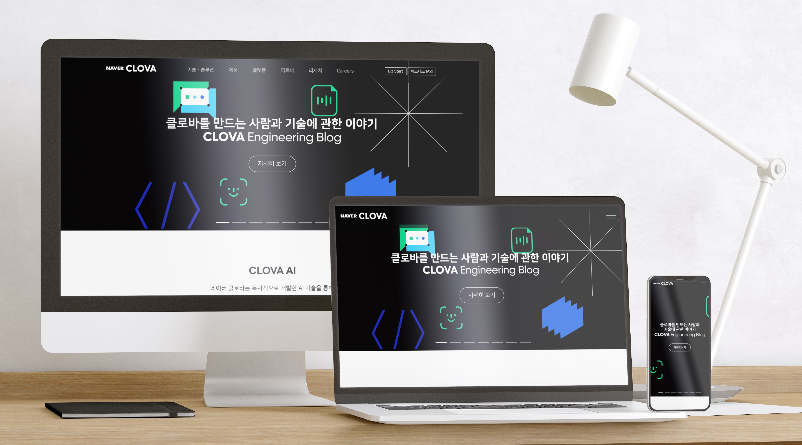
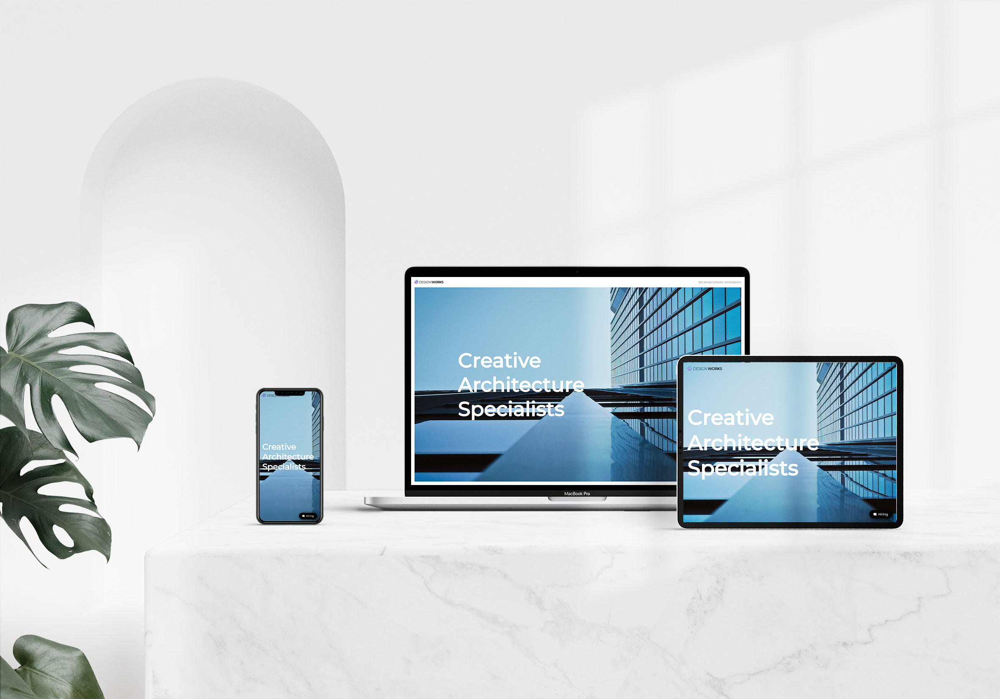
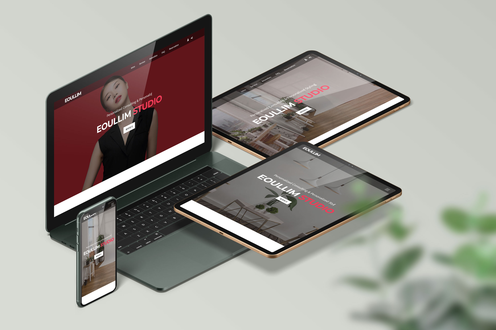
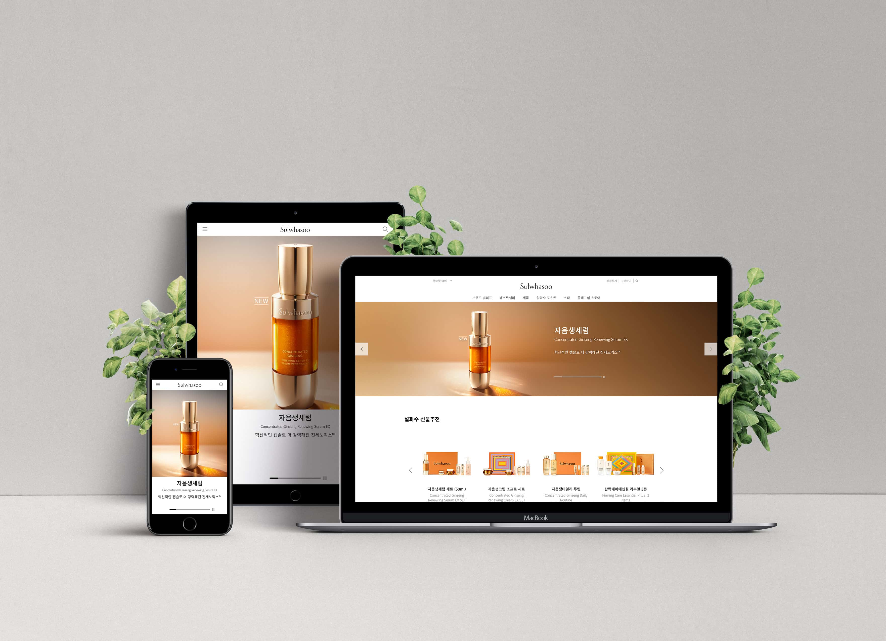

저는 사용자 입장에서 쉽게 접근할 수 있는 웹 구축을 위해서 팀원들과 소통하며 구조화된 마크업으로 개발하기 위해 노력하고 있습니다. 여기서 그치지않고 더 한발 나아가기 위해서 끊임없이 노력하며 늘 배우고 탐구하는 웹 퍼블리셔가 되고자 합니다.
웹 표준과 웹 접근성을 준수하는 퍼블리싱을 합니다. 웹 표준을 위해 HTML5 권장 마크업 방식과 시맨틱 태그를 사용하여 전체 레이아웃 설계를 합니다. UI 디자인 작업물을 바탕으로 클래스 네임과 함께 HTML 구조를 꼼꼼히 설계한 후 퍼블리싱 작업을 진행합니다.
IE 지원을 고려하여 안정적인 CSS 속성을 사용, HTML 요소를 배치합니다.
네비게이션, 탭 메뉴, 어코디언 메뉴 등의 웹 퍼블리싱에 반드시 필요한 기능은 플러그인을 사용하지 않고 순수한 jQuery 코딩으로 제작합니다. 필수적인 JavaScript 활용이 가능합니다. 실용성을 높이기 위해 주로 jQuery와 병행하여 활용합니다.
UI 작업물을 토대로 퍼블리싱하기 위해 포토샵을 주로 사용합니다. 단축키를 사용하여 효율적으로 작업합니다.
기본적으로 Visual Studio Code를 사용합니다. 필요에 따라 Adobe Brackets 또한 사용이 가능합니다. 효율적인 퍼블리싱을 위한 확장프로그램 설치와 단축키 세팅을 합니다.
기존 방식인 float, postion, media 쿼리를 활용한 반응형 웹 제작 경험이 있습니다. 필요에 따라 flex, grid 방식으로 반응형 웹 사이트 제작 또한 가능합니다.

기존에 존재하는 네이버 클로바 소개 홈페이지를 클론코딩한 결과물입니다. 하나의 index파일로 모바일 웹까지 지원할 수 있도록 미디어 쿼리를 사용해 반응형 웹 사이트로 제작하였습니다. 제작에 사용된 모든 이미지는 클로바 홈페이지에서 추출하여 사용했습니다.
레이아웃 배치는 모바일에 쉽게 적응할 수 있도록 flex 속성을 중점으로 사용하였습니다. 간단한 코드로 슬라이드를 만들 수 있는 slick, 스크롤 시 애니메이션이 작동하는 aos 플러그인을 커스텀하여 사용했습니다.

인프런 코딩웍스님의 강의를 토대로 작업한 반응형 웹 사이트 결과물입니다. 기존 웹 사이트 제작 방식인 float와 position 속성을 이용해 레이아웃을 배치했습니다.
간단한 코드로 슬라이드를 만들 수 있는 slick, 스크롤 시 애니메이션이 작동하는 wow 플러그인을 커스텀하여 사용했습니다.

가상의 퍼스널 컬러 메이크업 스튜디오 사이트를 제작하였습니다. 미디어 쿼리를 사용해 다양한 기기에서 접속할 수 있게끔 했고, 제작에 사용된 모든 이미지는 픽사베이 등의 저작권 무료 사이트에서 다운로드했습니다.
레이아웃 배치는 float, postion, flex, grid를 활용했으며, 간단히 슬라이드를 만들 수 있는 slick, 스크롤 시 애니메이션이 실행되는 AOS 플러그인을 사용했습니다.

기존에 존재하는 설화수 홈페이지를 클론코딩한 결과물입니다. 미디어 쿼리를 사용해 다양한 기기에서 접속할 수 있게끔 제작했습니다. 제작에 사용된 모든 이미지는 설화수 홈페이지에서 추출했으며, 그 외는 픽사베이 등의 저작권 무료 사이트에서 다운로드했습니다.
레이아웃 배치는 float, postion, flex를 활용했으며, 간단히 슬라이드를 만들 수 있는 slick 플러그인을 커스텀하여 사용했습니다.